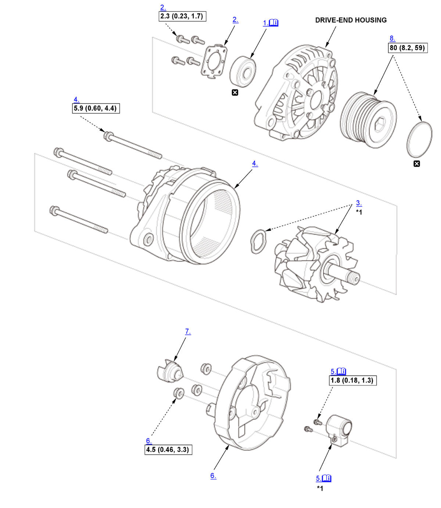

Alternator Overhaul (1.5L Engine): Reassembly: Procedure
NOTE:
Numbered call-outs in figure pertain to list numbers in following procedure.
Fig 1: Exploded View Of Alternator Components With Torque Specifications For Reassembly (1.5L Engine)

Courtesy of HONDA, U.S.A., INC. |
Detailed information, notes, and precautions |
 |
Torque: N.m (kgf.m, lbf.ft) |
 |
Replace |
| *1 | These parts have inspection items. |
- Front Bearing - Install
1. Install the front bearing (A) using the driver handle, 15 x 135L and the bearing driver attachment, 42 x 47 mm. - Front Bearing Retainer - Install
- Rotor - Install
- Stator Assembly - Install
- Brush Holder Assembly - Install
1. Push the brushes (A) in, then insert a pin or drill bit (B) (about 1.6 mm (1/16 in) diameter) to hold them there. 2. Install the brush holder assembly.
3. Pull out the pin or drill bit.
- End Cover - Install
- Terminal Insulator - Install
- OAD Pulley - Install